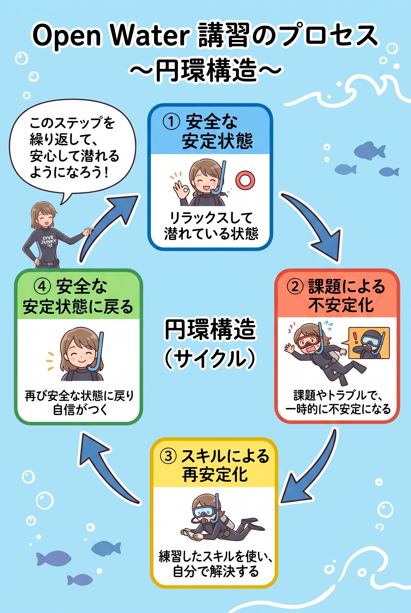

The road Orz passed by 2026 年 10 月
10 月 18 日 ( 日 )
Dive #229 MSD 初日と須磨 2026、そして Open Water コース
先日 10 月 12 日に threads に書いた。
ここ数日考えているのは、やっぱり Open Water の講習ってよく出来てる。ダイバーでない人をあれほど効率よくダイバーにする仕組みってすごいと改めて思う。
いろんな人がスキル上の得手不得手はあるものの、少なくとも海に無事に入って、普通に潜って、死なずに無事に陸に戻れるのを、あんな短期間で身に着けさせてしまうのだから、Open Water の講習はやっぱりすごいわ。
自分がハンディをもつことになって、しかも 21 年ものブランクがあって、再度海に入ってボロボロでジタバタしてなんとか元に戻ろうとしたけれど全然出来なくて、それがかえって Open Water の講習がすげーっていうことを再認識させてくれた。
なんだかすごいよね。40年近くダイビングに接していても、いや途中 21 年ものブランクはあるけれど、Open Water の講習に対する発見がなくならない。
Open Water の講習の凄さがなんか自分の中から消えない。
昔からダイビングの講習で最重要なのは Open Water って即答してきたけど、それがますます強くなった。
これはもちろん 8 日の自分自身の惨状を振り返っての文脈の中から出てきたことでもある。
そして 8 日の Web 日記に 1994 年 5 月 1 日の Master Scuba Diver のコース初日に Open Water のスキルができなくてボロボロ泣いてしまったこと、そして先日の 8 日の須磨でもできないとおかしいことが出来なくてボロボロ泣いてしまったことを書いた。
そして Open Water の講習がよく設計されていることと、Master Scuba Diver コースで Open Water のスキルができなかったことと、8 日のダイバーとしての最低限のスキルが失われているということが１本の線で、ついさっき繋がった。

Open Water コースでは Step by Step でコースが進められると説明されているし、そのように説明もしてきた。そうなんだけど、これはたしかに受講生を安心させるためではあったけれど、それだけではなかったことに今更気がついた。
気がつくのが遅すぎるとも言える。
Step by Step はすでに陸から始まっている。
どういうことかというと、思いだしてほしいのだけれど、Open Water コースでは陸上で機材をセッティングし、チェックを終わらせて、背負う。バディチェックを終わらせて、そしてマスクとスノーケルを首から下げて、フィンを手に持ったり手首にかけたりして、ザブザブと海に入る。
そして膝程度の水深のところでバディ同士で助け合ってフィンを履く。
そしてマスクを装着し、スノーケルあるいはレギュレーターを咥えて泳ぎだす。
以上の流れを顧みると、絶対ではないものの、転倒などのトラブルを起こさずに、あるいは起こしにくいように泳ぎだすところまで行えるように出来ている。
課題が与えられる水域にたどり着くまでは、ずっと図の①安全な安定状態が維持されるようにできている。
1994 年の Master Scuba Diver コース初日では②課題による不安定化の後の③スキルによる最安定化で、何度も失敗を繰り返して凹んで自信をなくして宿でメソメソと泣くことになった。
8 日の須磨では、そもそも①安全な安定状態が存在しなかった。要因はいろいろあれど（障がいがあるとはいえ、全部準備不足のぼくが悪い）、とにかく丸１日安定はなかった。そのため何も出来ずに無力感のために、自宅に帰ってからメソメソと（以下略
つまり講習だけでなくあらゆるトレーニングは安定状態をスタート地点としなければならない。
それが当たり前なのに 8 日は最初からそれがなかった。ぼくは失敗するべくして失敗したと言える。
わかってしまえば、なんだ、こんな当たり前のことが起きたんだと了解できる。
そして、今ここでぼくが理解しないといけないのは
「Step by Step の意味の掘り下げ方がまったく足りていたかった」
ということなだろう。
- Category :
- #Records of Orz's Road
- #ダイビング
- #スクーバダイビング
- #ダイバー
- #須磨2026
- #OpenWaterコースのすごさ
- #Step by Stepの意味